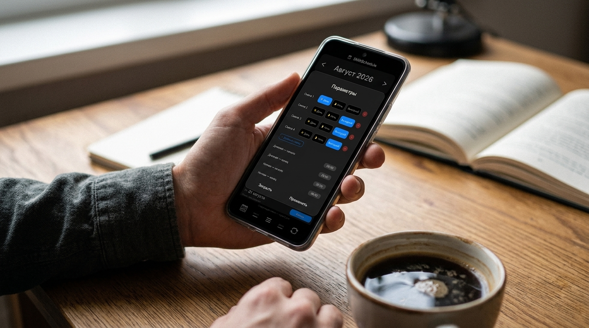
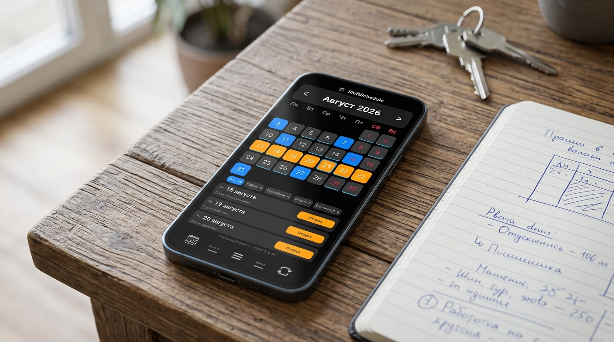

График «сутки через трое» (или 1/3) на бумаге выглядит заманчиво: отработал одни сутки — и целых три дня отдыхаешь. В теории это даёт массу свободного времени для семьи, хобби или бытовых дел. Но каждый, кто работает на скорой помощи, в стационаре, пожарной части, службе охраны или на круглосуточном производстве, знает главную ловушку этого расписания.
В неделе 7 дней, а в вашем рабочем цикле — 4 дня (сутки работы + отсыпной + два выходных). Из-за этой нестыковки ваши дежурства непрерывно «плывут» по дням недели. Если на этой неделе смена выпала на понедельник и пятницу, то на следующей — уже на вторник и субботу, затем на среду и воскресенье, а потом на четверг.
В результате простой житейский вопрос: «Сможешь пойти на свадьбу к друзьям через три месяца?» или «Когда лучше взять билеты в отпуск в ноябре?» превращается в утомительное математическое упражнение с ручным отсчётом четвёрок в настенном календаре.
Почему стандартные календари и блокноты бессильны
Большинство людей привыкли планировать жизнь через стандартный календарь в смартфоне или обычный настенный планинг. Но все они изначально спроектированы под классическую пятидневку и привязаны к жесткой 7-дневной неделе (понедельник — пятница).
Скриншот стандартного календаря Google/Android, загроможденного повторяющимися событиями, которые сбились после первой же подмены
Когда вы пытаетесь занести график 1/3 в стандартный Google Календарь или заметки вручную, начинаются проблемы:
- Рутинный ввод на месяцы вперёд: вам приходится вручную создавать десятки событий или настраивать сложное повторение «каждые 4 дня», которое забивает весь личный календарь одинаковыми плашками.
- Смерть расписания при первой же подмене: достаточно один раз выйти за заболевшего напарника или поменяться сменами, как всё автоматическое повторение стандартного календаря ломается. Приходится либо перенастраивать цепочку с нуля, либо мириться с тем, что календарь показывает неверные дни.
- Невозможность быстро оценить свободные дни: взглянув на обычную сетку календаря, мозг не может мгновенно отделить «отсыпной» (когда после 24 часов на ногах хочется только спать) от полноценных чистых выходных.
А как же интеграция с Google Календарём? В ShiftSchedule вам не нужно выбирать между специализированным сменным графиком и привычным системным календарём. В приложении встроена гибкая интеграция:
- Экспорт смен: приложение само аккуратно выгружает ваши дежурства 1/3 в Google Календарь, избавляя от ручного создания событий.
- Чтение внешних событий (двусторонняя связь): ShiftSchedule умеет прямо в своей сменной сетке показывать события, записи к врачу и праздники из вашего Google Календаря. Вы сразу видите, какие личные планы накладываются на рабочие сутки.
Как цикловой расчёт ShiftSchedule решает проблему за 10 секунд
В приложении ShiftSchedule календарь изначально построен вокруг сменных циклов, а не вокруг дней недели. Для графика «сутки через трое» реализован алгоритм A1 (автоматический цикловой расчёт с якорной датой).
Вам больше не нужно пролистывать месяцы и вручную отмечать каждое дежурство. Достаточно задать начальные параметры один раз:

Скриншот настройки графика 1/3 в ShiftSchedule: выбор шаблона «Сутки через трое» и указание даты ближайшего дежурства
Как это работает:
- Выбираете шаблон «1/3 (Сутки через трое)» или задаёте свой цикл (например, 1 рабочий день и 3 выходных).
- Указываете якорную дату — день, когда у вас было или будет любое ближайшее дежурство.
- Готово! Приложение мгновенно генерирует математически точную сетку смен на весь текущий год, следующий и хоть на пять лет вперёд.
Цветные маркеры наглядно подсвечивают рабочие сутки, а в шапке календаря сразу видно, сколько дней и часов осталось до выхода на пост.
Что делать, если график сбился: подмены, больничные и отпуска
В реальной жизни дежурных служб идеальный график 1/3 без изменений — большая редкость. Всегда случаются усиления, дежурства в праздники или подмены коллег.
В ShiftSchedule вам никогда не придётся пересчитывать весь график заново из-за одной внеплановой смены:

Демонстрация быстрого изменения статуса отдельного дня: нажатие на ячейку и выбор статуса «Подработка» или «Отпуск»
- Поменялись сменами? Просто нажмите на нужный день в календаре и смените его статус (например, с «Выходной» на «Работа» или «Подработка»). Основной 4-дневный цикл на остальные месяцы останется абсолютно нетронутым.
- Уходите в отпуск? Зажмите пальцем первый день отпуска (долгое нажатие), а затем просто коснитесь (тапните) последнего дня нужного периода. Диапазон выделится, и вы в одно касание присвоите всем выбранным дням статус «Отпуск». Все дежурства за этот период автоматически снимутся, а после отпуска привычный цикл 1/3 продолжится ровно с того дня, с которого положено.
Совет для планирования отпуска: с графиком «сутки через трое» очень выгодно брать отпуск так, чтобы он начинался сразу после рабочей смены. Открыв ShiftSchedule на полгода вперёд, вы за пару секунд найдёте идеальный месяц, где 2 недели отпуска фактически превратятся в почти 20 дней непрерывного отдыха.
Планируйте жизнь без блокнотов и калькуляторов
Знать свой график на полгода вперёд — значит вовремя купить билеты на поезд по выгодным ценам, без нервов записаться к врачу и не гадать каждый вечер: «А когда я дежурю на майские праздники?».
Наглядный вид годового календаря со сменами 1/3 на экране смартфона
Попробуйте настроить свой суточный график в ShiftSchedule — это займёт меньше минуты, работает полностью офлайн и навсегда избавит вас от путаницы в дежурствах.